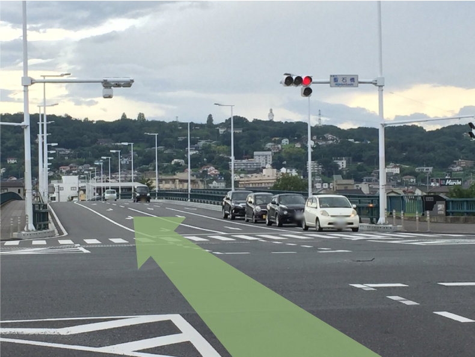
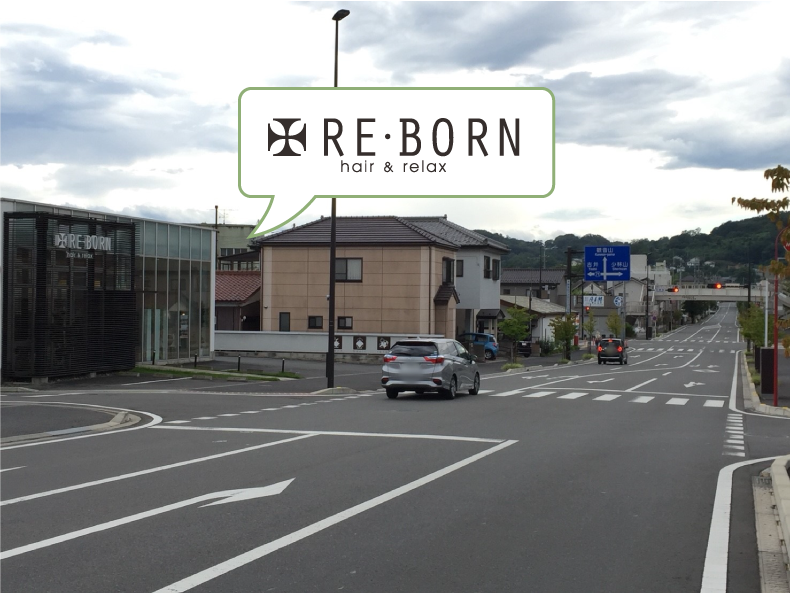

Access
アクセス
高崎駅より
| 住所 | 〒370-0863 群馬県 |
|---|---|
| 電話 | 0800-800-8835 タップで |
| 営業時間 | 9:00〜18:30 最終受付： |
| 定休日 | 月曜日・ |
| アクセス | 高崎駅より |
| 駐車場 | 店舗目の前に |
| お支払い | 現金／ |



ご予約・ご相談はお気軽に
ご予約は、
受付 9:00〜18:30（定休日：月曜日・火曜日）